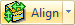

If your Stock is not aligned correction with the Part model you can change it.
1.Select the Program tab.
 MILL Module shown, Similar for MILL-TURN, TURN and Profile-NEST |
2. Select the Align menu.
3. Select Align Stock from the menu to display the dialog.
Select Align Stock from the menu to display the dialog.
4.First select the Z Alignment by select Top, Center or Bottom. For our example we will select Bottom.
5.Then select an XY Alignment option. Nine different locations are available. For our example we will select Center.
6.The Stock displayed on the screen will move then you make selections from this dialog.
7.Again if you have curves or other non-part wire frame geometry displayed, you can check the box in the dialog to ignore them when calculating the alignment.
8.Pick OK to close the dialog.
Alternatively you can move the actual part model in relation to the Stock if desired. IMPORTANT: This option will physically move the location of your part geometry. This command is useful when you have opened or imported part geometry that is NOT in the correct location for machining.
1.Open the part that you wish to align.
2.Define the Stock dimensions and location. See How to Define a Box Stock for more information. Our example part looks like this:
3.Select the Program tab.
MILL Module shown, Similar for MILL-TURN, TURN and Profile-NEST |
4. Select the Align menu.
5. Select Set World C.S. from the menu to display the dialog.
|
Remember that this dialog will physically MOVE your part geometry! |
6.First select an option from the Set WCS Origin section. This sets the new WCS Origin. In this example we select Set to Stock Box. We want to move the part in relation to the currently defined Box Stock.
7.Then define the ZERO Face. This aligns the part in Z. In this example we select Lowest Z so the WCS Origin of the part will move in Z to the bottom of the Stock Box.
8.Then define the Zero Position. There are nine cardinal directions to choose from. Each is in relation to the current Box Stock. In this example we select South West so the WCS Origin of the part will move to this position on the Stock.
This is our desired part location: |
9.When you pick OK, the part WCS origin will move the location you specified in the dialog.
|